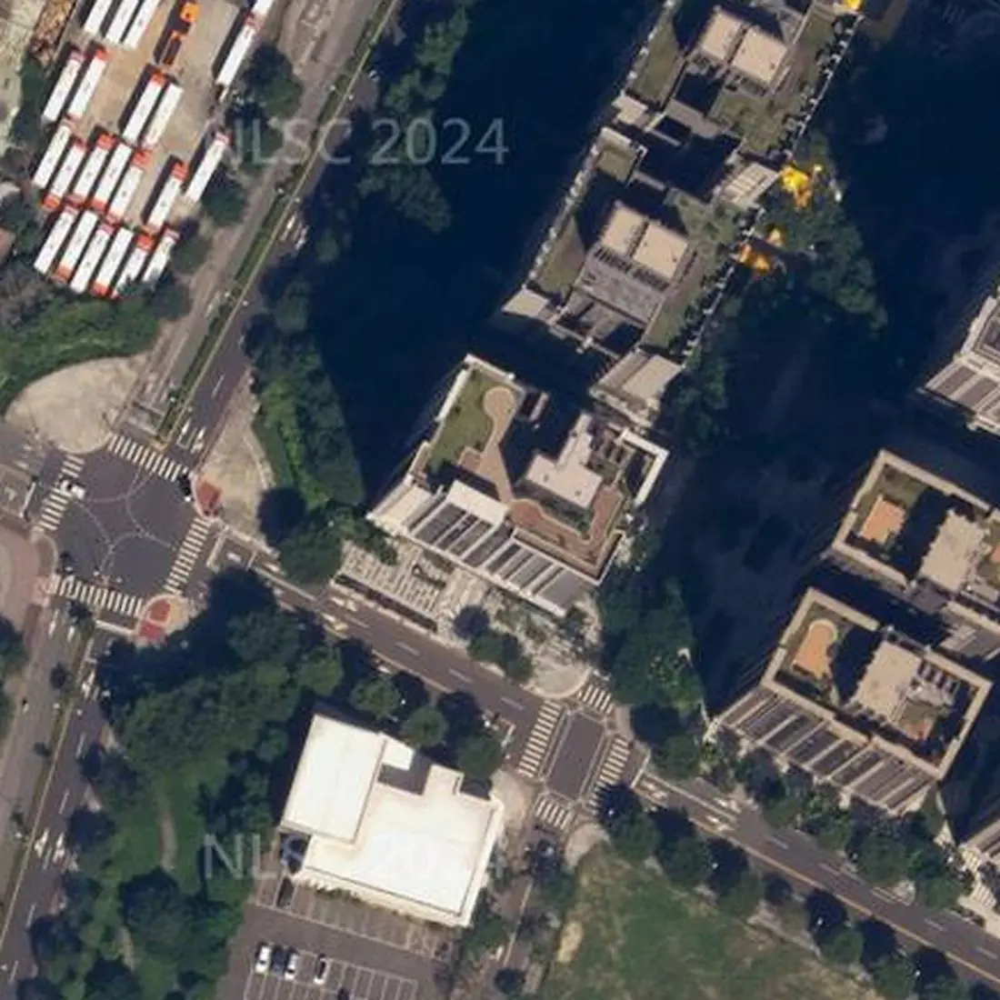

社區分析・文字版
永翠漾可以買嗎？板橋香社一路社區優缺點、格局、建商、捷運、日照、學區與看屋重點
帶看永翠漾時，買方最常問的就是下面這幾題。我把查過的資料整理在這篇，每一題第一段先講結論，跟上面的互動簡報（3D 模型、日照模擬、步行地圖）是同一份資料，數字都標了出處，實際狀況還是要以現場為準。
永翠漾可以買嗎？先說結論
永翠漾位於新北市板橋區香社一路56～86號、藝文街150～158號，屬江翠北側重劃區AB，民國113年8月完工，地上15層。走到捷運板橋站（BL07、Y16）3號出口步行約1,861公尺、約27分鐘。優點是藝香公園就在旁邊、轉角臨20米與12米道路、民國113年完工，大多附坡道平面車位；要留意的是離捷運站較遠、公設比約3成4。
適不適合，要看你最在意的是什麼。下面把買方最常搜尋的問題一題一題整理，每題第一段先講結論，數字都標了出處，實際狀況還是以現場為準。

從空中看永翠漾
香社一路56～86號雙號、藝文街150～158號，地上15層、地下5層、167戶，民國113年8月完工。社區轉角臨20公尺香社一路與12公尺藝文街，旁邊就是藝香公園。
永翠漾格局有哪些？幾房、幾坪？
依實價登錄申報資料（截至 115/11/01 公布），永翠漾有成交紀錄的住宅以3房最多（7筆），主建物約14.4～16.9坪。
| 房數 | 筆數 | 主建物坪數 |
|---|---|---|
| 2房 | 4 | 10.5～14.4 坪 |
| 3房 | 7 | 14.4～16.9 坪 |
資料來源：政府實價登錄，依申報的「建物現況格局」與「主建物面積」整理；為申報資料，可能與現況不同（例如改過隔間），不代表個別房屋。已排除特殊交易與大樓蓋好以前簽約的成交，只計住宅用途；同一戶多次成交只計一次，只涵蓋有成交紀錄的戶。資料截至 115/11/01 公布，之後的新成交未納入，以政府最新資料為準。坪數為主建物面積（不含附屬建物、陽台與公設），平方公尺換算成坪、取小數一位；筆數少於 3 筆的房數併入「其他」。僅供參考，實際以權狀與現場為準。
永翠漾是哪家建設公司、營造廠蓋的？
使用執照（113板使字第00235號）登記的起造人是僑馥建築經理股份有限公司，承造人（營造廠）是紹華營造股份有限公司。
永翠漾到捷運站走路多久？
捷運板橋站（BL07、Y16）3號出口步行約1,861公尺、約27分鐘。
最近的公車站：藝香公園(果菜市場)步行約213公尺、約3分鐘。
步行距離資料來源：Google 地圖規劃建議路線，實際以現場為準。
永翠漾日照好嗎？冬天曬得到太陽嗎？
接著看日照。這裡用7樓示意冬天的陽光，周邊也有不少15層上下的新大樓，低樓層比較容易被擋到，高樓層採光通常比較好。
看屋時可以上午、下午各看1次喔。
日照會因為面向、樓層、前後棟距差很多，看屋時建議上午、下午各去一次，站到窗邊看實際的採光與視野。
太陽位置：天文公式計算；日射：晴天直射理論值，不含散射與雲量；參考政府公開資料；社區以 15 層計（已查證）；結果為示意，實際以現場為準。
永翠漾學區是哪裡？
依政府公開資料，永翠漾的學區為國光國小、板橋國中，實際以教育局公告為準。
學區每年可能調整，入學前記得再向學校或教育局確認。
走路到學校：國光國小步行約656公尺、約9分鐘；板橋國中步行約457公尺、約6分鐘（步行距離資料來源：Google 地圖規劃建議路線，實際以現場為準）。
永翠漾有車位嗎？車位有多少？
依使照資料，停車位為汽車169・機車170。
看屋時建議確認車位的產權登記方式、位置與進出動線，機車位是否需要另外申請。
永翠漾公設有哪些？公設比多少？
公設有挑高迎賓大廳、交誼廳（整面書牆、沙發區與長桌）、地下室坡道平面車位；公設比約 34.5%（依實價登錄面積計算：成交 178 筆的中位數，車位面積已先扣除，資料期間 2021-03～2026-02，截至 115/11/01 公布）。
上面列的公設，都是本店經手永翠漾物件時現場拍到的；其他公設項目沒有建商資料或本店照片可以對照，開放項目有興趣可以向管理室確認。
公設實際開放時間與使用規定，以管委會公告與規約為準，看屋時可以請管理室帶看。
公設資料來源：本店之前拍攝的社區照片（迎賓大廳、交誼廳、社區外觀、地下停車場）；公設比：實價登錄買賣資料的面積欄位，以（建物移轉總面積－車位面積－主建物－附屬建物－陽台）÷（建物移轉總面積－車位面積）計算
永翠漾有管委會嗎？管理方式怎麼樣？
管理方式：永翠漾社區管理委員會。
看屋時可以向管理室確認：社區規約、管理費收取方式、公共基金與近期公共修繕計畫，以及有沒有進行中的社區爭議。
永翠漾是哪一年完工的？幾層樓、幾戶？
永翠漾民國113年8月完工、地上15層、地下5層、167戶、鋼筋混凝土造。
| 完工 | 民國113年8月 |
|---|---|
| 樓高 | 地上15層 |
| 地下層 | 5層 |
| 戶數 | 167戶 |
| 結構 | 鋼筋混凝土造 |
| 停車位 | 汽車169・機車170 |
| 管理 | 永翠漾社區管理委員會 |
| 臨路 | 香社一路20米 |
| 使用執照 | 113板使字第00235號 |
參考政府公開資料；實際以現場與地政登記為準。使用執照依新北市政府工務局使用執照存根影像。
永翠漾實價登錄有幾筆成交？
查詢範圍：新北市板橋區香社一路56～86號、藝文街150～158號，實價登錄買賣資料共 178 筆（交易期間 2021-03-27～2026-02-08；已排除親友、特殊關係等特殊交易 2 筆）。
資料截至 115/11/01 公布（本社區最近一筆交易日 2026-02-08），之後的成交以實價登錄網最新公告為準；不同戶型、面積不宜直接比較。
永翠漾生活機能方便嗎？超市、超商、市場走路多久？
步行可到：萊爾富步行約143公尺、約2分鐘；全家便利商店步行約545公尺、約7分鐘；藝香公園步行約195公尺、約3分鐘；新北市立圖書館板橋國光圖書閱覽室步行約448公尺、約6分鐘；板新醫院步行約1,004公尺、約14分鐘。
- 萊爾富（便利商店）：步行約143公尺、約2分鐘
- 全家便利商店（便利商店）：步行約545公尺、約7分鐘
- 藝香公園（公園）：步行約195公尺、約3分鐘
- 新北市立圖書館板橋國光圖書閱覽室（圖書館）：步行約448公尺、約6分鐘
- 板新醫院（醫療院所）：步行約1,004公尺、約14分鐘
- 板橋果菜批發市場（市場）：步行約319公尺、約4分鐘
步行距離資料來源：Google 地圖規劃建議路線，實際以現場為準。地點名稱與位置參考政府開放資料與連鎖店官方門市查詢。
永翠漾優缺點有哪些？
優點：藝香公園就在旁邊；轉角臨20米與12米道路；民國113年完工，大多附坡道平面車位。要留意：離捷運站較遠；公設比約3成4。
藝香公園就在旁邊
社區旁邊就是藝香公園；萊爾富步行約2分鐘，全家約7分鐘。
轉角臨20米與12米道路
社區臨20公尺香社一路與12公尺藝文街，公車站藝香公園（果菜市場）步行約3分鐘。
民國113年完工，大多附坡道平面車位
地上15層、地下5層、167戶；實價登錄178筆成交中，174筆附坡道平面車位。
永翠漾缺點是什麼？看屋時要確認什麼？
看永翠漾要先確認的是：離捷運站較遠；公設比約3成4。
離捷運站較遠
到板橋站3號出口步行約1861公尺、27分鐘，通勤多半要搭公車或騎車。
公設比約3成4
依實價登錄面積計算約34.5%，室內實際使用的比例相對少一些；看屋時可以問清楚公設項目與管理費。
永翠漾附近社區
想一次比較位置，可以看板橋商圈地圖，或回首頁看全部社區分析。
永翠漾所在區域的整理：江翠重劃區買房。
想看永翠漾？
想知道永翠漾目前有沒有房子在賣，歡迎聯絡。
☆預約看屋請聯絡：林津陞 0925-635-678
加官方 LINE：@banqiao.asheng，聊天室輸入「攻略」，系統自動傳送《買房避坑攻略》電子檔（約2萬字／38頁）
全國不動產板橋加盟店
經紀業｜非凡不動產有限公司
經紀人｜謝政峯（99）北縣字第002181號
營業員｜林津陞（99）登字第148103號
資料來源：參考政府公開資料（依政府資料開放授權條款使用）；地圖：© OpenStreetMap contributors（ODbL）；本店之前拍攝的社區照片。步行距離與日照為規劃與模擬結果，學區以教育局公告為準，房屋資訊仍須以現場、產權資料及正式文件為準。